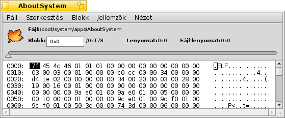
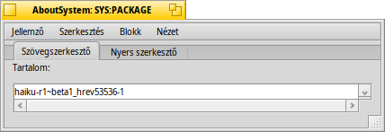

Magyar
Magyar Català
Català Deutsch
Deutsch English
English Español
Español Français
Français Italiano
Italiano Polski
Polski Português
Português Português (Brazil)
Português (Brazil) Română
Română Slovenčina
Slovenčina Suomi
Suomi Svenska
Svenska 中文 ［中文］
中文 ［中文］ Русский
Русский Українська
Українська 日本語
日本語 LemezFürkész (DiskProbe)
LemezFürkész (DiskProbe)
| Asztalsáv: | ||
| Útvonal: | /boot/system/apps/DiskProbe | |
| Bellítások: | ~/config/settings/DiskProbe_data |
A LemezFürkész egy hexadecimális szerkesztő és nézegető, ezen kívül pedig fájlokat és lemezeket tud módosítani bájt szinten. A használatával legyünk óvatosak, mert könnyedén okozhatunk problémát!
A program elindítása után választanunk kell, hogy egy fájllal vagy lemezzel akarunk dolgozni. Ezt követően a következő felület fogad minket:

A fő nézet mindig egy blokknyi adatot tartalmaz, aminek a mérete módosítható a menüben. Bal oldalon a blokk lenyomata található, középen a hexadecimális értékek, és jobb oldalon pedig azok szöveges megfelelője ASCII karakterekkel.
A blokkok közt a fenti csuszkával mozoghatunk, vagy az ALT ← és ALT → billentyűkkel, a hexadecimális és az szöveges oszlop között pedig a TAB lenyomásával válthatunk.
A menü nem csak a kijelölést mutatja különféle endiánokkal (és hexadecimális vagy decimális formában, ami megadható a menüben), de a kijelölés blokk-lenyomatát is, ahová mindjárt oda is ugorhatunk. Ez az opció nem érhető el, hogyha a pozíció kívül esik a fájlon/eszközön.
Ha az éppen megnyitott fájlnak jellemzői is vannak, akkor a menü használtó azok megnyitására egy új ablakban. Itt látható például a másolásvédelmi jellemzője a Névjegy programnak:

A jellemző típusától függően különféle szerkesztőket kaphatunk a jellemzőkhöz az állandóan használható Nyers szerkesztő mellett. Például a szöveg és a MIME típusok szerkeszthetőek, az ikonok megjeleníthetőek.